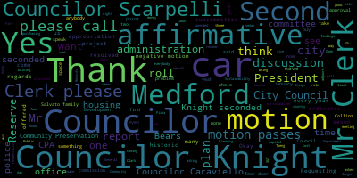

[SPEAKER_02]: I see that he's on zoom vice president bears.
[Hurtubise]: He's waving hello. Councilor Collins? Here. Councilor Knight. Councilor Scarpelli. Councilor Tseng, President Morell, President, and Councilor Carvaviello.
[Caraviello]: So the affirmative please rise to the flag. One nation, under God, indivisible, with liberty and justice for all. Okay. Motions, orders, and resolutions. 22050 offered by Council of Knights. We are so resolved that the Medford City Council extend its appreciation, gratitude, and well wishes to the Salvato family, owners and proprietors of Espresso Pizza, for efforts in support of the community spanning over four decades in the city of Method and be it further resolved that the Salvato family be recognized by the city of Method by way of dedicating the corner of Winthrop and Boston Avenue in recognition of the Salvato family. Councilor Knight?
[Knight]: Mr. President, thank you very much and I know that you and I was supposed to be co sponsors on this I apologize for leaving you off. I know that you and I spoke about. But it's the Sobato family are owners and operators of Expressos pizzeria on Boston Ave. Mr. President, but just that just closed very recently. And for 40 years they operated at that corner and they were one of the first businesses in this community to get an extended hours license. And they really set a trend up there. They serviced my neighborhood that I grew up in, as well as I'm sure Councilor Collins will tell us, Tufts University population for a great deal. But they've always been a great neighbor and a great partner in the community. And after 40 years, they're hanging up the aprons and the pizza wheel. So I think it goes without saying that they deserve some recognition for the community building that they did here in this city. And they've offered this community, Mr. President. They're great people, a great family. I had the opportunity to grow up with some nephews, some of our nephews in the Davises as well. great kids, great people, all giving to this community now. So with that being said, I'd ask my council colleagues to support this resolution and send it to the administration for the request.
[Caraviello]: Thank you. And personally myself, I want to thank Councilor for putting me on with this. I don't think there's anybody that lives, either went to Tufts or lives in probably most areas of West Medford that haven't had an expresso pizza. I mean, Friday, Saturday nights, they used to turn their phone off. The calls are coming in so fast and furious. I think at one point they had like 17, 18 drivers on the weekend. So, good family, been there for many years and I just want to thank them for all the things they've done for our community.
[Scarpelli]: Mr. President.
[Knight]: Councilor Scarpelli.
[Scarpelli]: Thank you again. Thanks for bringing this forward, Councilor. Council President, this is, this is a family that again you have to celebrate because although they owned a successful business. They were always one of the first businesses get back to the youth of the community so often you go in there, and you'd see a new plaque. express those representing and sponsoring another youth team or activity. So I've had the pleasure to know a lot of this Salvato family, and I know that they've done so much for our community, and I would support and second Councilor Knight's motion. Thank you, Mr. President.
[Caraviello]: Oh, any further discussion? So on the motion by Councilor Knight and Councilor Caraviello, seconded by Councilor Scarpelli, Mr. Clerk, please call the roll.
[SPEAKER_02]: Vice President Bears. Yes.
[Hurtubise]: Councilor Collins. Yes. Councilor Knight. Councilor Scarpelli.
[Caraviello]: Yes, 7 in the affirmative. Zero in the negative, motion passes. 22-051, offered by Councilor Knight be a result that the city, the Medford City Council require recordings of all city boards and commissions who are conducting proceedings virtually on the city website for no less than 36 months and be a further resolve that the city solicitor provide a draft ordinance requiring such in search for council deliberation.
[Knight]: Councilor Knight. Mr. President, thank you very much. I've gotten a number of complaints recently from members of the community seeking copies of minutes or copies of meetings related to especially the Cannabis Advisory Commission as well as the Historic Commission. And these documents or records are not available readily on the website. So after multiple calls, I thought it might make sense for us to reach out to the administration and ask them to take the appropriate steps to ensure that this material gets posted publicly and transparently, and that the council take the appropriate steps to ensure that this is a standard and a norm, not an anomaly.
[Caraviello]: Thank you. Second. Any further discussion? Mr. Clark, anybody want to speak?
[SPEAKER_03]: No hands raised.
[Tseng]: All right, both in terms of transparency and in terms of community participation, I think this measure is important. I also think it's helpful for our community when we have more people participating so they can give us their ideas and help us reach more innovative solutions. So I definitely support this.
[Caraviello]: Yeah. Okay, so on the motion by Councilor Knight, seconded by Councilor Scarpelli. No further discussion, Mr. Clerk.
[SPEAKER_03]: Mr. President.
[Caraviello]: Mr. President, I don't have a camera. So just speak up if I don't see you.
[Bears]: You're all right. I would just if, if Councilor Knight would be so amenable to amend this to include that minutes be posted, even if the meetings are occurring in person.
[Knight]: We certainly have no problem with that, sir.
[Bears]: Thank you.
[Caraviello]: So on the motion by Councilor Knight, seconded by Councilor Scarpelli as amended by vice president bears.
[SPEAKER_02]: Mr. Clerk, please call the roll. Vice President Bears. Yes.
[Hurtubise]: Councilor Collins.
[SPEAKER_02]: Yes.
[Hurtubise]: Councilor Knight. Yes. Councilor Scarpelli. Yes. Councilor Tseng. Yes. President Morell. Yes.
[Caraviello]: Councilor Caraviello-Long. Yes. Semi-affirmative, none the negative, motion passes. 22052 offered by Councilor Knight be it so resolved that the Medford City Council in the executive session for the purpose of discussing the administration's data and IT vulnerabilities as identified in the 111.22 Medford transcript article.
[Knight]: Council night, Mister President, thank you very much. Yes, yet again, a nice personnel issue has made its way to the newspaper that's identified a number of issues that are going on here at City Hall. One of those issues, I believe, would be an IP vulnerability. It's my understanding that our IT director, after 24 years of employment in the city of Method with an exemplary record, was removed from his position based upon some certain IT vulnerabilities that the council has not been made aware of. This is very concerning to me, Mr. President, because of their IT vulnerabilities. Similar to what we saw in the past, the administration wouldn't disclose to us when the number of personal information was taken from the city website maybe nine or 10 months ago. It just raises cause for concern, number one, and it also raises cause for liability for the city. And if there's going to be a liability that's placed upon the city, it's going to end up costing the city money, and the council should know about it, because we're the steward of the taxpayer dollar. So with that being said, Mr. President, I'd ask that this motion to move forward that we set up an executive session with the city administration for us to discuss these it vulnerabilities to see what steps we need to take to ensure that the personal information and data of the taxpayers in this community is protected appropriately.
[Caraviello]: Second.
[Knight]: Thank you.
[Caraviello]: Um, any further discussion.
[SPEAKER_06]: Thank you, Mr. President. Yeah, I support this resolution. And I can just work just to make sure that this notice is narrowly worded because if we do, if we were to, we don't want to, if we were to venture into the personnel, then we would have to make sure that we're inviting the proper people. So making sure it's worded in a way that we're getting the update on the IT vulnerabilities and not in a personnel sense is my opinion and just the need to make sure it's properly noticed.
[Caraviello]: Thank you. Any further discussion? So on the motion by Councilor Knight seconded by Councilor Scott belly. Mr. Clerk, please call the role.
[Hurtubise]: Vice President Bears. Yes. Council Collins. Yes. Councilor Knight. Yes. Councilor scruffy.
[SPEAKER_02]: Yes.
[Hurtubise]: Councilor Tseng yes.
[SPEAKER_02]: President Morell. President. Yes.
[Caraviello]: Thank you. Councilor Caraviello. Yes, 70 affirmative. Another negative motion passes. 22053 offered by Councilor Knight. We have so resolved that the Municipal City Council will establish a subcommittee on litigation. Councilor Knight.
[Knight]: Mr. President, thank you very much. Litigation and representation has been the topic of discussion. Most of those terms so far, Mr. President, for the last four or five weeks, that's all we've been talking about is litigation and representation. And recently, this council passed a money bill to amend the fiscal year budget to allow the mayor's private legal counsel to really have an open checkbook for litigation. And when we look at what's going on here in the community and you think about the litigation that's pending, and the amount of money that's been appropriated, and whether or not that amount of money is going to be able to stretch to cover the issues that are in dispute right now, it raises some concern for me financially. So when you think about the more than 25 labor charges that are against the city right now, when you think about the 340 developments that the city's fighting right now, that doesn't look like we're fighting a winning battle. When you look at the potential issue with the cannabis advisory commission in the conflict of interest concerning one of the members of the selection committee. It just puts me in a position as the president to sit here and think about what we're doing with our money and whether or not we should be planning appropriately for future spending. You know since this term started I think we've spent a lot of dough in 4 or 5 weeks and I'm hoping that you know we can kind of responsibly manage our budgets, our plans, our finances. And I think that by establishing a subcommittee on litigation, that will give the council a better idea going forward as to what steps we need to take to fund the law department in an appropriate fashion to ensure that we secure our legal representation moving forward, to be sure that we secure our zoning consultant moving forward. So I think that this will help us address a number of the concerns and issues that we've raised, Mr. President. May I ask for my council colleagues' support?
[Caraviello]: Thank you. Any discussion on this matter? Second. Mr. Clark any customer or what comes up is, I think, see any hands raised. It's me. It's Council.
[Bears]: Thank you, Mr. President. Definitely support the intent of this. If the Councilor would be so amenable to refer this to the committee on rules and ordinances I think we could have the discussion in there by the end of February and get this set up.
[Knight]: If I'm with me, I know that the president's strong pencil also has the power to strike and create the subcommittees as we discussed at the beginning of the session, but I personally have no objections. What direction this council chooses to go with that direction, I want to go for transparency purposes. So be it, I have no problem with that whatsoever.
[Bears]: Then I would move to refer to that committee on ordinances and rules.
[Caraviello]: So Councilor Bears has moved to move this to where, I'm sorry, Vice President Baez.
[Bears]: the subcommittee on ordinances and rules.
[Caraviello]: Move to ordinances. Subcommittee on ordinances. So, the motion by Councilor Knight, seconded by Councilor Scarpelli, and as amended by Councilor Bears to move this to the subcommittee on ordinances. So, Mr. Clerk, please call the roll.
[Hurtubise]: Vice President Bears. Yes. Councilor Collins.
[SPEAKER_11]: Yes.
[Hurtubise]: Councilor Knight. Yes. Councilor Scarpelli. Yes. Councilor Tseng. Yes. President Morell.
[Caraviello]: Yes.
[Hurtubise]: Councilor Caraviello.
[Caraviello]: Yes, affirmative. Motion passes. At this time, I yield the chair to Councilor Layton.
[SPEAKER_03]: Thank you, Councilor Caraviello. I'll give you a moment to get back to your chair.
[Knight]: Paper 22054 offered by Councilor Caraviello. Be it resolved the Medford City Council will have the mayor start looking into purchasing vehicles for the Medford Police Department, most patrol cars are now four plus years old with high mileage. Councilor Caraviello.
[Caraviello]: Thank you, Mr. President. Mr. President, this is something that's been discussed over many, many, many times in the city. I think four years ago, we purchased a whole bunch of new cars, and all those cars now have over 100,000 miles on it. I remember at the time we talked about setting up a plan where we be purchasing cars every year. So we're not in a point like this where we have to go out and buy seven or eight cars. And again, that plan never materialized. So at this point, I'm asking us, I'm asking the administration to set up a plan to buy police cars every year. No, you don't have to buy 10 a year, but if you move two or three every year, we're not in the dream world now. So we don't have all these cars sitting there with hundreds of thousands of miles, even though we have an in-house mechanic. We're just spending money repairing cars, because these are cars that run 24 hours a day, seven days a week. So I asked the administration to look into this purchase, especially where cars are in high demand right now. It may take you longer than normal to even maybe even find a car, if there are any police cars available. So I asked the mayor to look into this, and for the administration to come up with a plan We're constantly purchasing cars every year, one or two at a time, so we don't have to do this backlog of waiting to do this.
[Tseng]: Thank you for introducing this. I know there are constituents out there who may be skeptical, right, of given national trends or national discussions, but I think we should look at the history here in our city, and we should look at the fact that our cars are over 100,000, you know, the mileage is over 100,000. Those are the new ones. Yeah. And so, and 100,000 for clarity is usually the median of where cars start to be, patrol vehicles start to be replaced. And so, in order, you know, I think this is a reasonable request, although if the council would be so amenable, if, if you'd be able to amend this to say that we come up with a that the city administration come up with the capital, a complete capital plan.
[Caraviello]: So, so that it's, I don't have a problem with us coming up with a complete capital plan. That'll take some time. Of course, yeah. But, you know, but I'd like to come up with a plan just for this. Like I said, I don't have a problem with this being part of a capital plan.
[Tseng]: Great. And as a second amendment of mine would be to make sure that we are exploring patrol vehicle policies. This is something I've done a little bit of research on just looking into this. It seems that in municipalities across the country, the cities have negotiated deals with police unions, with the police officers where, you know, the police have a little bit more agency and a little bit more initiative. And this research has shown that the longevity of patrol vehicles is longer and that cities save up on costs a little bit more. I'm talking about cities, Miami is a very big example of one, but these policies are pretty common in the Midwest and the South. And I would just ask that the city administration explore some of these policies. We don't have to adopt anything, but I think it'd be worth our time to explore. Right, no problem.
[SPEAKER_11]: Mr. President, if I could.
[SPEAKER_06]: Thank you, Mr. President. Thank you, Councilor Caraviello for bringing this forward. I'm curious, I would like to amend if you'd be amenable, just to also include any updates, get an update from the administration on seeking hybrid or EV vehicles to meet these needs. I know I brought up both budgets. The chief has said it's something he's looking into. I'm just curious any progress we've had on that.
[Caraviello]: That's not a problem.
[Collins]: Thank you, and thank you Councilor Caraviello for bringing this forward today. I think this resolution is important, obviously we need to make sure that every city vehicle is a safe vehicle, and I support measures to ensure that. I also want to thank Councilor Tseng and President Morell for their amendments, you know, of course, as we all know, resources are finite, needs are many, so I support, you know, I'd be interested to see this purchase plan, a phased in purchasing plan in the context of an overall capital budget, just to see how it interacts with other funding priorities, including other funding priorities within the MPD, which I know are many at this point. I also wanted to note, you know, kind of to President Morell's point, of course, yearly vehicle purchases, even if they're phased in, they're no small thing environmentally. And, you know, there is a huge emissions cost baked into high volume vehicle manufacturing, you know, even for EV vehicles. So regardless of how this goes forward, obviously, patrol cars are a bit of a non-negotiable. But I think that that's something that I'd really like to see acknowledged and accounted for in our overall path to net zero emissions. So just wanted to note that for the record, regardless of how we go forward, I think that'd be a valuable thing for us to, for the administration to consider in their purchase plan of these vehicles. Thank you.
[Bears]: Thank you, Mr. President. I think Councilor Collins made a good statement. Every city vehicle should be a safe vehicle. And I would just like to, if folks are comfortable with this as an amendment, just ask, there's been a shift. I remember when I was younger, we actually had patrol cars. They were cars and now we've moved more to SUVs. And I just would like to amend this to ask going forward, if the plan is to continue with SUV size vehicles and ask why that is.
[Caraviello]: Councilor Bears, I think that's all they're making for the police departments right at this particular moment. Very few companies make four-door sedans anymore. So the four-door SUV, small SUV, is the way of most cars in the country. I said, I don't think most cars, Ford seems to be the choice of police car, and they no longer make a four-door sedan. So that seems to be the trend in police cars throughout the whole country.
[SPEAKER_03]: Thank you, and I do see the chief of staff has her hand raised recognizes the chief of staff in this area.
[Nazarian]: Thank you, Mr. President, just a couple pieces of information for the council, just as a part of this conversation, just to provide some input. wanted to make sure that the we shared with the council that we have free cash requests coming before the council in March, and that would include to police cruisers. And also, that's consistent with the capital plan and also further funding is has been identified for future years for cruisers as well. But of course we are also at the same time need to go through the capital plan, review the further review and update the capital plan at this point. So just also can't really comment too much on some of the other comments or questions that have been presented, but certainly electric vehicles sound great. Just need to make sure that Um, we are able to do that, and I can't speak for the chief to see if there are any operational reasons. But you know, all of those things are items. I'm sure that will be taken into consideration, and we can certainly comment on those at the time in which we come before the council to request the funding from free cash.
[SPEAKER_03]: Yes. Yes. Yes. Yes.
[Knight]: seven the affirmative zero and the negative the motion passes Council paper to to 055 offered by Councilor Caraviello be resolved the city council request the administration please provide the council with the findings of its review of the clerk's office along with all legal costs associated Councilor caveat.
[Caraviello]: Thank you, Mr. President. This is something that we, we had discussed last year when the administration did a review of the clerk's office and they said it was only gonna take a couple of weeks and we're almost at the end of January. And if the, if the administration would be so kind to share the results of those findings where the clerk's office does come under the city council to find, so you can let us know what the findings of the report were. And also if you could give us the cost the legal costs associated with that review of the clerk's office.
[SPEAKER_02]: Second.
[SPEAKER_03]: The motion by Councilor Caraviello seconded by Councilor bears with a quickly color role.
[SPEAKER_02]: Yes. Yes. Yes. Yes. Yes.
[Hurtubise]: Yes.
[Caraviello]: Communications from the mayor, 22049, to President Morell and all members of city council. On behalf of the Community Preservation Committee, I respectfully request and recommend Your Honor to approve the following recommendations of the Community Preservation Committee. Requesting appropriation of $75,000 from CPA Historic Reserve to the Medford Fire Department for design and engineering to the windows of three historic fire substations. Requesting the appropriation of $350,000, $236,383 from the CPA Housing Reserve and $118,617 from the CPA General Reserve to the Medford Housing Authority for pre-development designs for the walking court redevelopment. Requesting the appropriation of $148,000 from the CPA Open Space Reserve to the Office of Planning, Development and Sustainability for the Riverbend Park Remediation Phase II project. And requesting the appropriation of $54,000 from the CPA Historical Reserve to the Office of Planning, Development, Sustainability, Civic Auditorium and Convention Center Commission for accessibility improvements at the Chevalier theater. This project will be tracked in the community preservation fund by category housing historic space historic open space in general reserve. Thank you for your cooperation. Respectfully submitted.
[Knight]: Oh, this is an appropriation request that I support wholeheartedly I certainly have no problem with the appropriations that are requested here by the administration. In particular, the walking clock project, I think we're very lucky to have Jeffrey Driscoll running the Metro Housing Authority, the premier housing authority director in the state of Massachusetts. He's the housing authority director that trains the other housing authority directors across the state. He's done an excellent job he's really. moved our housing authority forward, very similar to the way that Mike Durham has moved that veterans office forward. He's done a great job. And I've been looking at this request. I think this is what the CPA is really intended for. It's a perfect use. So with that being said, I support it wholeheartedly. In terms of the Riverbed Park project and the accessibility improvements to Chevallier Auditorium, again, two items that we've been talking about for a long time, two things that I think are important to this community. So without being said, I'd move for approval on the table.
[Caraviello]: Second. I was just seconding second second accounts of his console columns.
[Collins]: I was also just seconding but I agree with everything and I'd said I think these are four extremely worthy projects, very excited to support them.
[SPEAKER_06]: Thank you, Mr. President, yeah I just want to note that for those watching who maybe weren't at our meeting on Wednesday we didn't have a meeting on Wednesday on each of these projects with a great overview on all of them and again I also wholeheartedly support them I think it's a great mix of projects and we did get word from. I'm friends with the CPC that there are other projects that will be forthcoming that they are still reviewing based on the amount of projects that came in and the amount of funding that is available. So I just want to note that there will be more coming because I know if people have been attending those meetings, there's many other very worthy projects and I look forward to those coming before this body. Thank you.
[Caraviello]: Thank you for myself. Thank you. I agree wholeheartedly with Councilor Layton on Mr. Driscoll and the housing. Walking quarters goes back to the 1960s and very little money has ever been appropriated there. I'm glad we're finally going to do something with that, bring it up, bring it up standards and we'll be adding housing there for people who need it. So again, thank you, Jeff, for the great work you do. And again, all these other projects are saying they're all good projects, but I think that one there stands out as the, as the key one of this group. So any further discussion? No, on the motion by Councilor Knight, seconded by Councilor Bears. Mr. Clerk, please call the roll.
[Hurtubise]: Vice President Baez? Yes. Councilor Collins?
[SPEAKER_02]: Yes.
[Hurtubise]: Councilor Knight? Yes. Councilor Scarpelli? Yes. Councilor Tseng? Yes. President Morell?
[SPEAKER_11]: Yes.
[Hurtubise]: Councilor Caraviello?
[Caraviello]: Yes, second the affirmative. Motion passes. Let's see, I don't see anything else on the agenda here. Two committee reports. Okay, yep, I'm sorry, we have reports of committee. 22013, hold on a second, Mr. Clerk. 22013, January 18, 2022, committee of the report, mayoral report, this is in regards to the election commission. Joe? are on the motion by counseling a for approval seconded by Councilor Collins, the clerk please call the role.
[SPEAKER_02]: Yes. Yes. Yes. Yes. Yes.
[Caraviello]: January 19th, we have the whole main report to follow. Mr. Clerk, this was in regards to- This was in regards to the Community Preservation Act. Oh, yes, yeah, in regards to the Community Preservation Act, which we just approved. Motion for approval. Motion for approval by Councilor Scarpelli, seconded by Councilor Tseng. Mr. Clerk, please call the roll.
[Hurtubise]: Vice President Paris. Yes. Councilor Collins. Yes. Councilor Knight. Yes. Councilor Sainz? Yes. President Morell?
[SPEAKER_11]: Yes.
[Caraviello]: Councilor Caraviello? Yes, seven in the affirmative, none in the negative, motion passes. Councilor Collins?
[Collins]: Mr. President, if I may, motion to take from the table papers 21631 and 22023 for the purpose of surgery. Those aren't eligible till next week. Next week?
[Bears]: Not eligible next week.
[Collins]: It's already February in my mind.
[Bears]: Mr. President, if I may. Just before we consider the records. Just wanted to let everybody know that I'm on zoom because I tested positive for COVID-19. It is no fun. I am fully vaccinated and boosted, and it still is not fun was. taking precautions, wearing masks everywhere, not going in big crowds. So just wanted to put out a point of note that, you know, the virus is still out there spreading widely. I'm still not sure how I got it. I've talked to all my close contacts and they're all negative and asymptomatic. So, you know, it's out there. And as I said, it's no fun. And I tested positive on a rapid test and just want to make a point that if you test positive on a rapid test in Medford, let the board of health know. You can email them through the city website email our public health nurse Sarah Harris, and it just helps to keep the statistics up. So, just wanted to let you guys know I already let all the Councilors know and the staff that I was around last week, but I just wanted to put that message out there. I'm really glad that I'm vaccinated and boosted otherwise I think I would feel a lot worse, and I hope to be back with you in a couple weeks in the chamber. Thanks.
[Caraviello]: Thank you. Public participation. Anybody want to speak to public participation? Okay, hearing and seeing none. Records were passed to Councilor Scarpelli. Councilor Scarpelli, how did you find these records? So on the motion by Councilor Scarpelli, seconded by Councilor Knight. Mr. Clerk, please call the roll.
[Hurtubise]: Vice President Peters. Yes. Councilor Collins. Councilor Knight. Yes. Councilor Scarpelli. Yes. Councilor Tseng. Yes. President Morell.
[SPEAKER_11]: Yes.
[Caraviello]: Councilor Caraviello. Yes. Seven affirmative motion passes on the motion by Councilor Tseng to adjourn. Seconded by Councilor Collins. Mr. Clerk, please call the roll.
[SPEAKER_02]: Vice President Bears. Yes.
[Hurtubise]: Councilor Collins. Yes. Councilor Knight. Yes. Councilor Scarpelli. Yes. Councilor Tseng. Yes. President Morell. Yes. Councilor Caraviello.
[Caraviello]: Yes. So the affirmative motion passes. I want to remind everybody we have a subcommittee meeting tomorrow evening and hope to see everybody there. Motion to adjourn. Meeting adjourned.
|
total time: 11.08 minutes total words: 1634  |
total time: 6.18 minutes total words: 1287 |
total time: 0.67 minutes total words: 107 |
total time: 2.02 minutes total words: 340 |
|
total time: 2.25 minutes total words: 423 |
total time: 1.6 minutes total words: 305 |
||
{kind=link}
{kind=link}
{kind=link}
{kind=link}
{kind=link}
{kind=link}